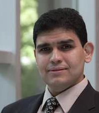

Keynote – Jon Whittle
Does your software value what you value?

Software engineering has generally done a good job of building software systems with the intended functionality and cost and that is safe, secure and reliable. However, there is a broader set of human values -- such as transparency, integrity, diversity, compassion, social justice -- that are largely ignored when we develop software systems. In this talk, I will argue that software development methods should place more emphasis on these human values so we do a better job of building software that aligns with our individual, corporate or societal values. Furthermore, drawing on recent evidence from case studies in industry, I will argue that dealing with human values in software systems is not just of interest to a small group of organisations; rather, all software projects should think about human values, build them in where appropriate, test for them, and use them to drive design decisions. When they are not dealt with in this way, there can be severe social and economic consequences.
Jon Whittle is Executive Dean of the Faculty of Information Technology at Monash University, Melbourne, and Professor of Software Engineering. Before joining Monash, Jon was Head of the School of Computing and Communications at Lancaster University, UK. Jon’s research spans software engineering and human-computer interaction. In software engineering, he is best known for his work on program and design synthesis, model-driven development and aspect-oriented modelling. He is a past recipient of the Royal Society’s Wolfson Merit Fellowship, a Pilkington Teaching Award for his studio-based approach to software engineering education, and an IEE Software Premium Award. He has also received a number of Best Paper awards or nominations at ICSE, ASE, MODELS, CSEE&T and CHI. Jon has Chaired a number of prestigious software engineering conferences and is Co-Chairing ICSE 2019 with Tevfik Bultan. Currently, Jon’s research focuses on IT for social good and, in particular, how to reimagine software design methodologies to embed social values.
Keynote – Ahmed E. Hassan
Software Engineering in a Data Science Future

Machine Learning (ML) advances continue to be headline news. Enormous investments are being poured into Data Science (DS) and Artificial intelligence (AI) initiatives worldwide. Hiring managers are turning every rock looking for ML, DS, and AI experts and even novices! Forbes proclaims software engineers will be replaced by deep learners in the not so distant future. In this talk I will highlight the crucial role of Software Engineering (SE) in this ML\DS\AI future. I will follow it up with a critical look at many of the challenges and risks that such sophisticated advances bring to software research and practice.
Ahmed E. Hassan is an IEEE fellow, an NSERC Steacie Fellow, a Canada Research Chair (CRC) in Software Analytics, and the NSERC/BlackBerry Software Engineering Chair at the School of Computing at Queen’s University, Canada. His research interests include mining software repositories, empirical software engineering, load testing, and log mining. Hassan spearheaded the creation of the Mining Software Repositories (MSR) conference and its research community. Hassan serves on the editorial boards of IEEE Transactions on Software Engineering, Springer Journal of Empirical Software Engineering, and PeerJ Computer Science.
Keynote – Zhi Jin
Forward and Backward Traceability: Requirements and Challenges
Traceability is originally one of the essential activities of good requirements management for ensuring that the right products are being built at each phase of the software development life cycle. The forward traceability has been posed for tracing the progress of the development and to analyze the impacts of the changed requirements for reducing the changing efforts. It will become more important in the resilient cyber-physical systems as such a system need not only to replicate or modify itself but also to develop the design by which it is replicated or modified. For these systems, bi-directional traceability is highly demanded and to some sense becomes an embedded capability of the systems. This talk will analyze the requirements and the technique challenges of built-in bi-directional traceability in resilient cyber-physical systems.
Zhi Jin is a professor of Computer Science at Peking University and the deputy director of Key Lab of High Confidence Software Technologies (MoE) at Peking University. Her research work is primarily concerned with requirements engineering and knowledge-based software engineering. Recently, she pays more attentions on the modeling of self-adaptive systems. She is/was principle investigator of over 15 national competitive grants including the chief scientist of a national basic research project (973 project) of the MoST of China and the project leader of three key projects of NSF China. She is co-author of four books and author/co-author over 150 journal and conference publications. She serves for RE2016, KSEM2010 as General Chair and COMPSAC2011 and KSEM2009 as Program co-Chair. She is executive editor-in-chief of Chinese Journal of Software (2013- ), Associate Editor of IEEE TSE (2018- ) and serves in the Editorial Board of JCST (2010- ) and REJ (2014- ).